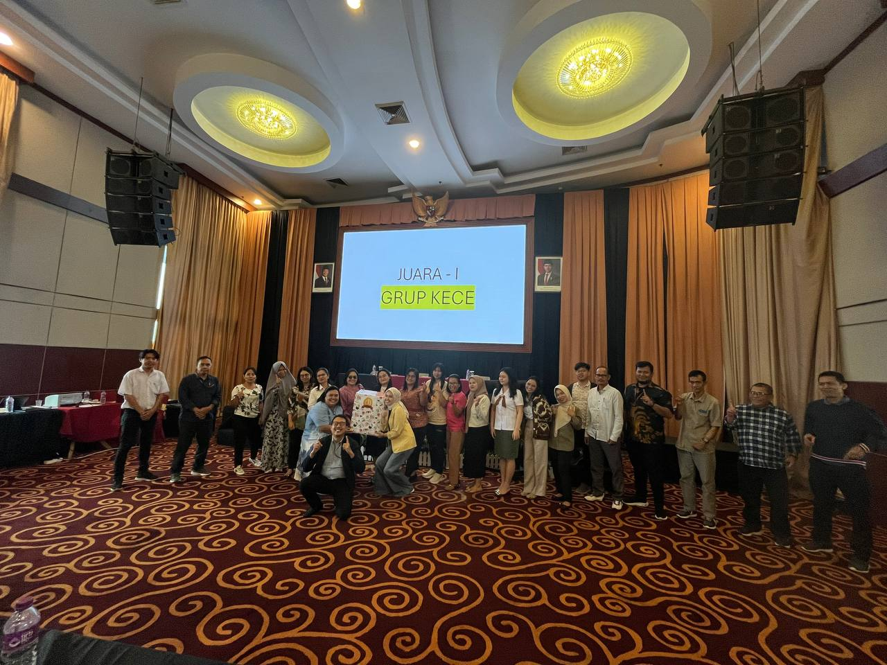
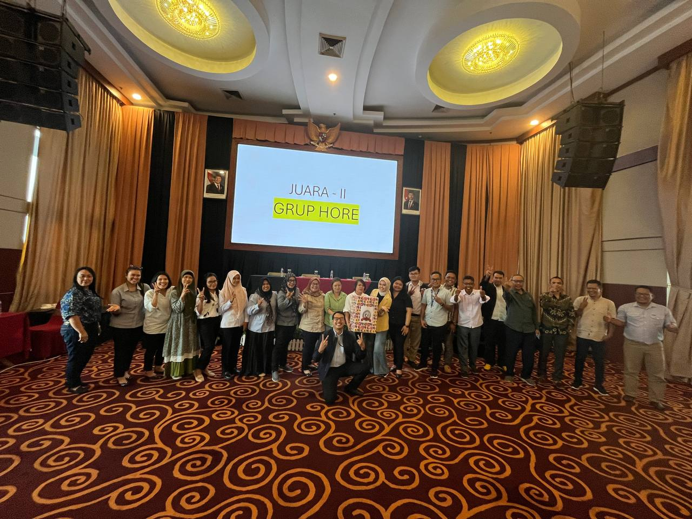
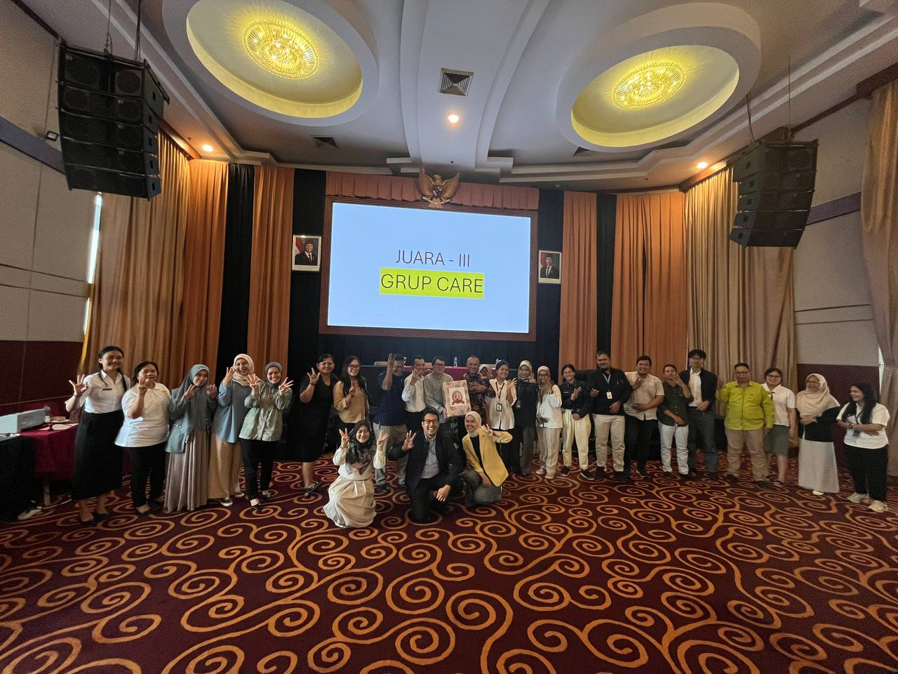
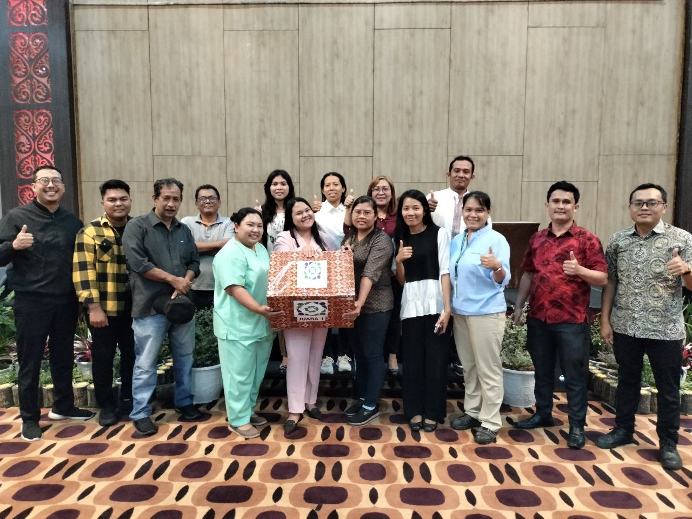
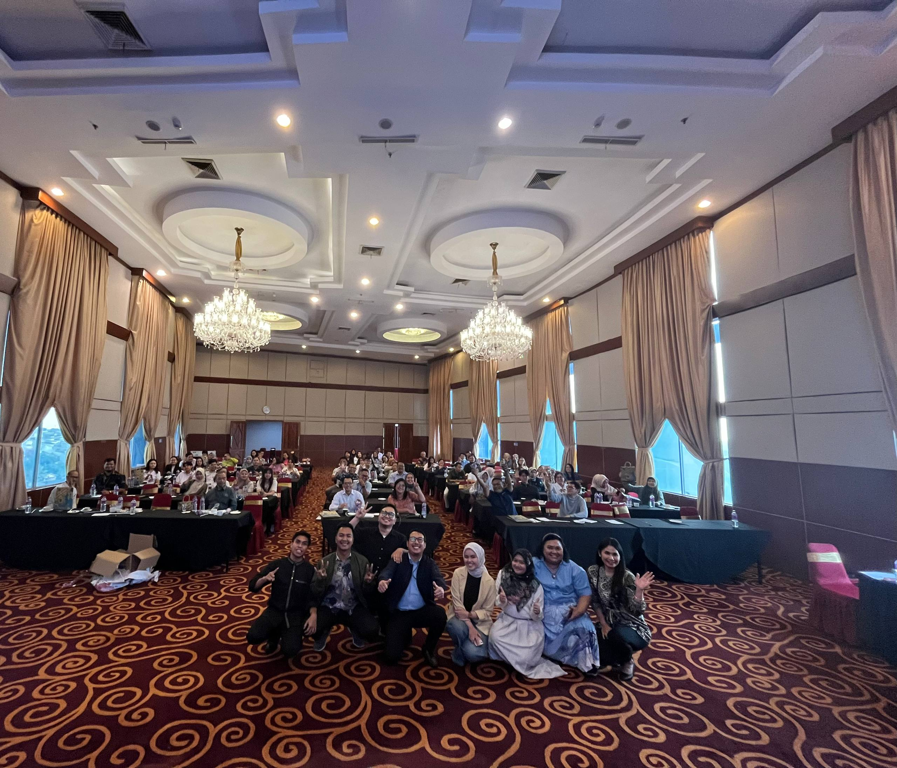
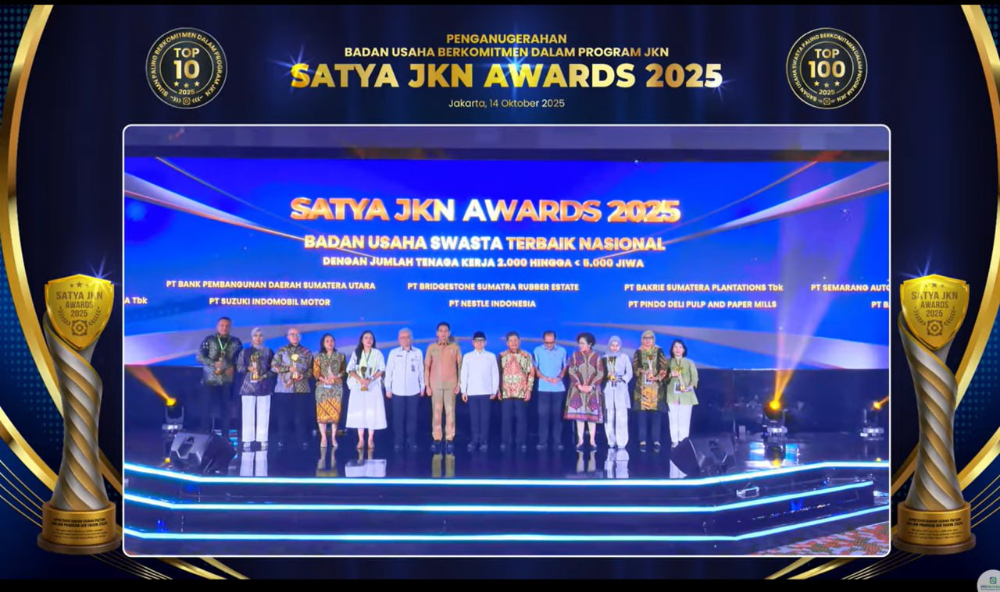
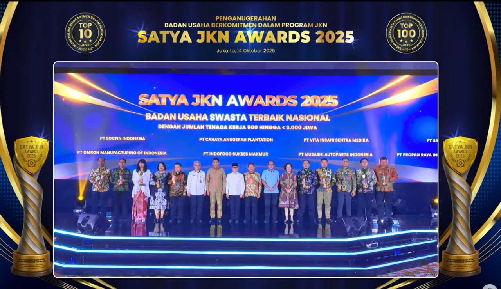
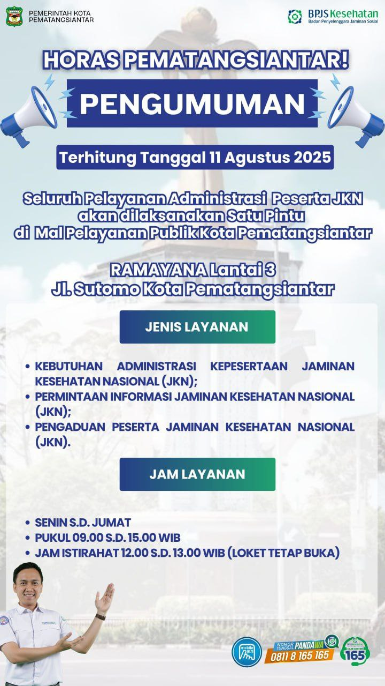
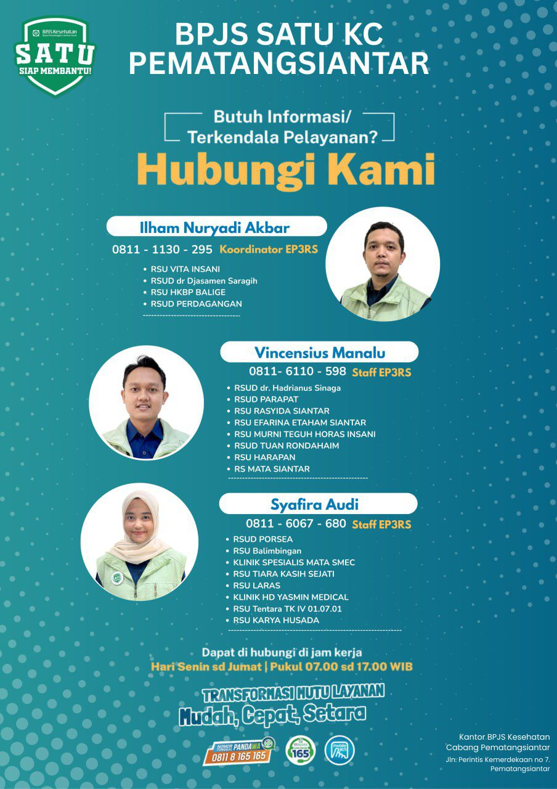
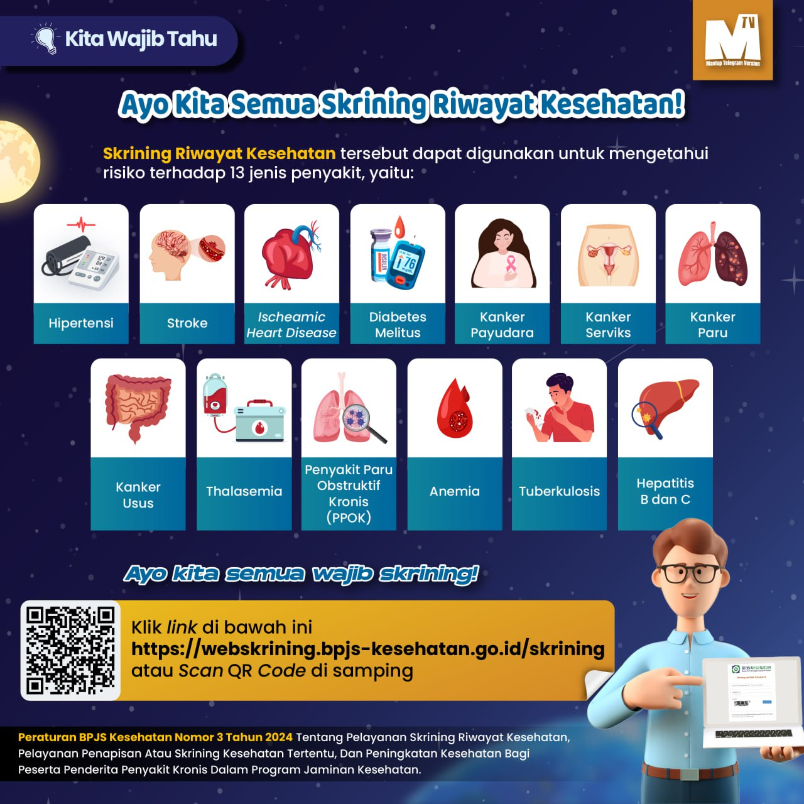

Dokumentasi
Galeri Badan Usaha
Dokumentasi kegiatan dan pelayanan BPJS Kesehatan KC Pematangsiantar.







Informasi layanan administrasi Badan Usaha dan Panduan Penggunaan eDabu untuk perusahaan Anda
Unduh dokumen panduan dan formulir yang Anda butuhkan untuk administrasi kepesertaan Badan Usaha.
Langkah-langkah menonaktifkan data pekerja melalui aplikasi eDabu secara benar dan tepat.
Rencana Pembayaran Bertahap (REHAB) — solusi kemudahan pelunasan tunggakan iuran Mandiri/Alih Segmen.
Panduan lengkap cara mengubah data gaji / upah peserta melalui portal eDabu Badan Usaha.
Template / formulir resmi yang harus diisi untuk pengajuan penonaktifan peserta.
Panduan lengkap penggunaan aplikasi eDabu versi terbaru untuk Badan Usaha.
Kumpulan panduan administrasi kepesertaan Badan Usaha melalui aplikasi eDabu.
Langkah pendaftaran peserta baru yang belum terdaftar di program JKN melalui eDabu.
Proses pendaftaran pekerja yang berasal dari ISAT dalam satu Badan Usaha yang sama.
Panduan proses mutasi atau perpindahan anggota keluarga tambahan peserta.
Prosedur re-aktivasi kepesertaan anak yang telah berusia di atas 21 tahun.
Prosedur penonaktifan anggota keluarga yang tidak lagi ditanggung atau telah meninggal dunia.
Panduan mendaftarkan Istri/Suami/Anak (ISA) Warga Negara Asing yang belum terdaftar JKN.
Cara menambahkan anggota keluarga yang sebelumnya terdaftar di segmen peserta yang berbeda.
Panduan menambahkan anggota keluarga baru (pasangan/anak) ke dalam kepesertaan JKN.
Prosedur mendaftarkan pekerja Warga Negara Asing yang belum memiliki kepesertaan JKN.
Panduan proses peralihan kepesertaan dari segmen PBPU ke segmen PPU Badan Usaha.
Panduan penggunaan layanan Selaras untuk administrasi kepesertaan Badan Usaha secara terpadu.
Informasi dan pengumuman terbaru dari BPJS Kesehatan KC Pematangsiantar.

BaruSeluruh Pelayanan Administrasi Peserta JKN akan dilaksanakan Satu Pintu di Mal Pelayanan Publik Kota Pematangsiantar.
Baca Selengkapnya
Info
Pengumumanserangkaian pemeriksaan medis atau tes yang bertujuan mendeteksi dini penyakit, risiko kesehatan, atau kelainan tertentu pada seseorang, bahkan sebelum gejala muncul. Tujuannya adalah untuk menemukan potensi masalah lebih awal agar penanganan dapat segera dilakukan guna mencegah komplikasi lebih serius
Baca SelengkapnyaDokumentasi kegiatan dan pelayanan BPJS Kesehatan KC Pematangsiantar.







Hubungi petugas kami langsung melalui WhatsApp untuk informasi dan bantuan lebih lanjut.
Kepala Bagian Kepesertaan
Admin Kepesertaan
Admin Kepesertaan
Admin Kepesertaan
Kunjungi kantor kami pada jam operasional untuk pelayanan langsung.
Jl. Perintis Kemerdekaan No. 7
Pematangsiantar, Sumatera Utara
Senin – Jumat: 09.00 – 15.00 WIB
165 (BPJS Kesehatan)
Kab. Simalungun, Sumatera Utara
Senin – Jumat: 09.00 – 15.00 WIB
165 (BPJS Kesehatan)
Kab. Toba, Sumatera Utara
Senin – Jumat: 09.00 – 15.00 WIB
165 (BPJS Kesehatan)
Kab. Samosir, Sumatera Utara
Senin – Jumat: 09.00 – 15.00 WIB
165 (BPJS Kesehatan)